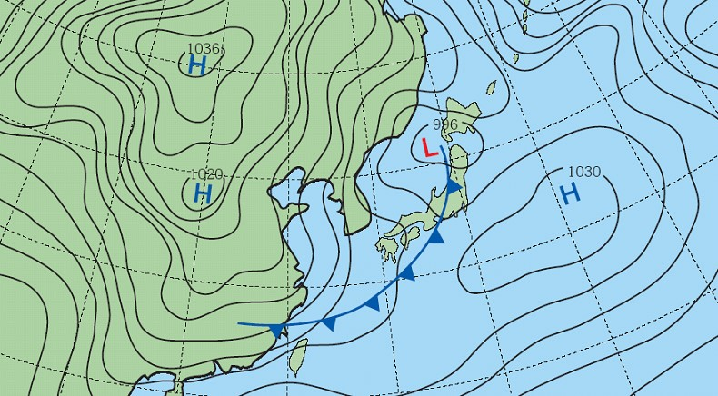

附圖是某日上午8時的地面天氣圖，請根據此圖回答下列問題：
( )(1)圖中所標示之H及L分別表示什麼？
(A)均表示高氣壓 (B)H表示高氣壓，L表示低氣壓 (C)H表示低氣壓，L表示高氣壓 (D)均表示低氣壓。
( )(2)如果圖中之鋒面前進方向不變，預測未來幾天臺灣的天氣狀況可能為何？
(A)風速增強，降雨機率增加 (B)午後雷陣雨頻繁 (C)高溫炎熱 (D)雲量減少。
( )(3)下列何者為該日最合理之日期？
(A)4月5日 (B)7月7日 (C)9月28日 (D)12月25日。
